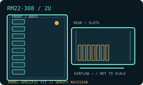

[ MODEL IDENTIFICATION // RM22-308 ]
SilverStone RM22-308 2U server chassis
A 2U rack chassis with model-specific drive, PSU and expansion layouts. Match the enclosure revision, backplane and rail kit before installation.

MODEL NOTE: This record covers the RM22-308 only. Options, revision-dependent PSU support and installed bay modules may change fit; verify labels and the manufacturer manual before buying replacement parts.
Dimensions & fit specifications
| Rack units / external dimensions | 2U; 430 × 88.5 × 660 mm (W × H × D); rear cabling and rail extension increase installed depth. |
|---|---|
| Motherboard compatibility | SSI-EEB, SSI-CEB, E-ATX, ATX, Micro-ATX and Mini-ITX. Check board edge, CPU-cooler and connector position against 2U internal clearance. |
| PSU / power compatibility | Compatible 2U single or redundant server PSU. PSU length/form factor is model-specific; use the RM22-308 manual rather than substituting a desktop ATX supply. |
| Drive bays / backplane | Eight front 3.5-inch/2.5-inch hot-swap bays with SAS/SATA backplane (8-port, Mini-SAS HD SFF-8643, up to 12 Gb/s); two internal 2.5-inch positions (up to 15 mm) and one slim optical bay (12.7 mm). Check backplane and controller protocol compatibility. |
| Riser / PCIe | Seven low-profile PCI/PCIe expansion positions; cards and any required riser must match the board’s slot pattern and low-profile envelope. |
| Cooling / service clearances | Three hot-swappable 80 × 38 mm PWM fans; CPU cooler height limit 68 mm. Provide unobstructed front intake and rear exhaust. The 660 mm chassis depth does not include rail extension, connectors or service-loop allowance. |
Compatibility & service notes
The model uses a Mini-SAS HD backplane connector, unlike the SFF-8087 cabling used by some neighboring cases. Identify backplane label/revision and controller before connecting; remove serviceable fan modules only after shutdown.
- Measure the complete installed depth: chassis, rack ears/slides, cable-management arm if fitted, connectors and cable bend radius.
- Maintain clear front intake and rear exhaust access; do not obstruct removable fan, drive, PSU or backplane service paths.
- Before hot-swap work, confirm the controller/backplane interface and follow the chassis manual’s power-down and ESD procedure.
Manufacturer sources
- SilverStone — RM22-308 product specificationsManufacturer specification page for the RM22-308 model.
- SilverStone — RM22-308 product sheet (PDF)Manufacturer mechanical/product sheet for dimensions and compatibility.